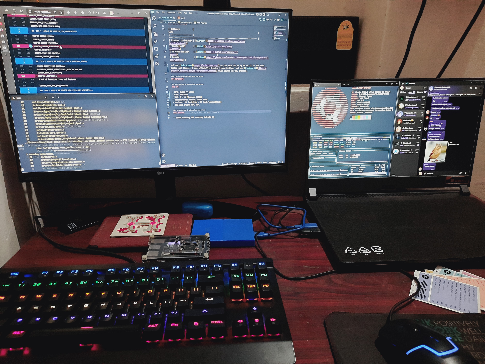

Editor + Terminal
I use the windows-terminal that ships with Windows 11-insider preview with zsh and powershell-7. The editor I use depends on what code I am working with:
- Web, Python: VS Code
- Android: VS Code
- Flutter: VS Code
- Kernel: VS Code
- Docs: Neovim
I just use vim for quick editing on servers(better than emacs). Fight me.
OS & tooling
| Software | Link |
|---|---|
| Windows 11-insider | Microsft |
| Ubuntu(wsl2) | Store |
| VS Code-insider | GitHub |
| Neovim | GitHub |
I use Void Linux as the main OS on my PC as it is the best distro out there I now officially despise Linux-desktop, and use Windows 11 with Ubuntu in wsl instead.
My workspace
Hardware
- CPU: Ryzen 7 4800H
- GPU: RTX3050
- RAM: 8 + 8 (Samsung DDR4)
- Monitor: 21 inch (LG) + 15 inch laptop (Asus)
- Old and trusty RPI 3B+.
Phone
- 128GB Samsung M21 running Android 11